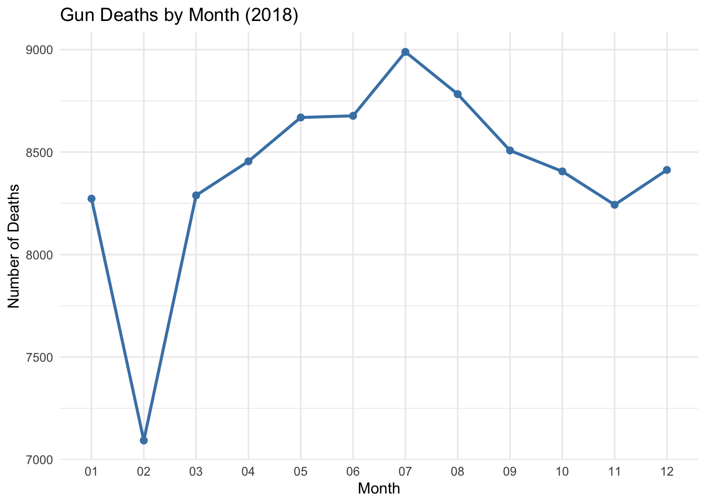
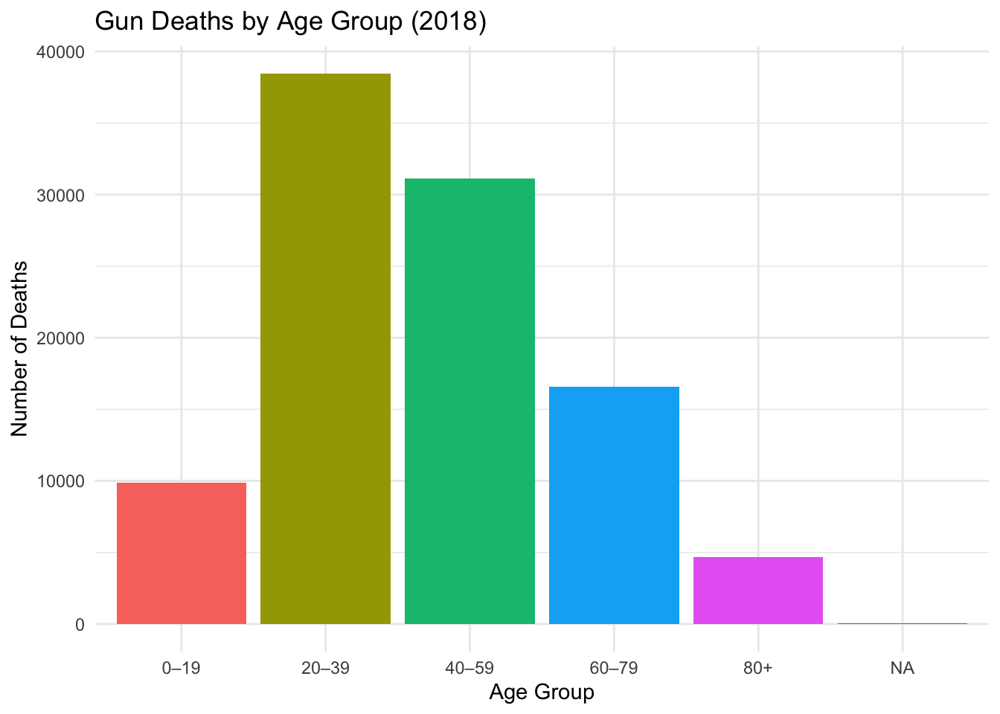

gun_deaths
Background
The interactive visualization created by Periscopic on U.S. Gun Deaths in 2018 presents an emotional and data-driven exploration of every gun death that year.
Each line represents a life cut short, with its length showing the number of years of life lost. After exploring the filters for age, gender, race, and intent, several clear patterns emerge.
Most gun deaths in 2018 were suicides, particularly among middle-aged white males. In contrast, homicides were more common among younger individuals. The visualization also makes it clear that suicides, though often less publicized, far outnumber homicides in the United States.
This data tells a story not only about how people die but also about who they were — and what could have been. Understanding these patterns helps us think about how to target prevention and awareness efforts throughout the year.
Research Question
Which demographic and intent-based groups experienced the highest numbers of gun deaths in 2018, and how might these patterns vary by season?
This question will guide the following visualizations, which aim to help a public-awareness client plan campaigns emphasizing different groups or issues in different seasons.
Data Loading
Summary: This dataset contains over 33,000 records representing individual gun deaths in 2018. It includes columns such as age, sex, race, month, intent, and geographic information, allowing for analysis of who was affected and how circumstances vary.
Visualization 1 — Gun Deaths by Intent
This first visualization provides a general overview of the types of gun deaths recorded in 2018.
Code

Description: This plot shows that suicides account for the vast majority of gun deaths in 2018, followed by homicides. This highlights how prevention efforts could focus more on mental health resources and suicide awareness campaigns, especially targeting high-risk groups.
Visualization 2 — Gun Deaths by Month
To address the client’s request for identifying seasonal emphasis areas, this chart examines monthly variations.
Code
Warning: Using `size` aesthetic for lines was deprecated in ggplot2 3.4.0.
ℹ Please use `linewidth` instead.
Description: There appears to be a slight increase in gun deaths during the summer months (June–August), suggesting that awareness campaigns focusing on safe conflict resolution and stress management might be most effective during this time. Winter months generally show fewer deaths, possibly due to seasonal behaviors or reduced outdoor activity.
Visualization 3 — Gun Deaths by Age Group
Next, we group individuals by age to understand which life stages are most affected.
Code
gun_data %>%
mutate(age_group = cut(age, breaks = c(0, 20, 40, 60, 80, 100),
labels = c("0–19", "20–39", "40–59", "60–79", "80+"))) %>%
count(age_group) %>%
ggplot(aes(x = age_group, y = n, fill = age_group)) +
geom_col(show.legend = FALSE) +
labs(title = "Gun Deaths by Age Group (2018)",
x = "Age Group",
y = "Number of Deaths") +
theme_minimal()
Description: Gun deaths are most common among individuals aged 20–39, followed by those aged 40–59. Younger adults appear to be at the highest risk, indicating that outreach efforts and educational campaigns targeting this demographic could have the greatest impact.
Visualization 4 — Gun Deaths by Gender and Intent
Finally, this chart explores gender differences in types of gun deaths.
Code

Description: Males represent the overwhelming majority of gun deaths, particularly in suicides. Female deaths occur far less frequently but are more likely to be homicides. This suggests that messaging for male audiences could focus on mental health and suicide prevention, while female-focused campaigns could emphasize domestic violence prevention and safety resources.
Conclusion
The 2018 data on gun deaths reveal significant trends across intent, age, gender, and season. Most deaths result from suicide, primarily among men aged 20–59. Seasonal patterns indicate slightly higher rates during the summer months, suggesting an opportunity to time prevention campaigns accordingly.
By tailoring campaigns to highlight mental health awareness in men, safety in younger adults, and prevention messaging during the summer, organizations can maximize their impact in reducing gun-related deaths in the U.S.